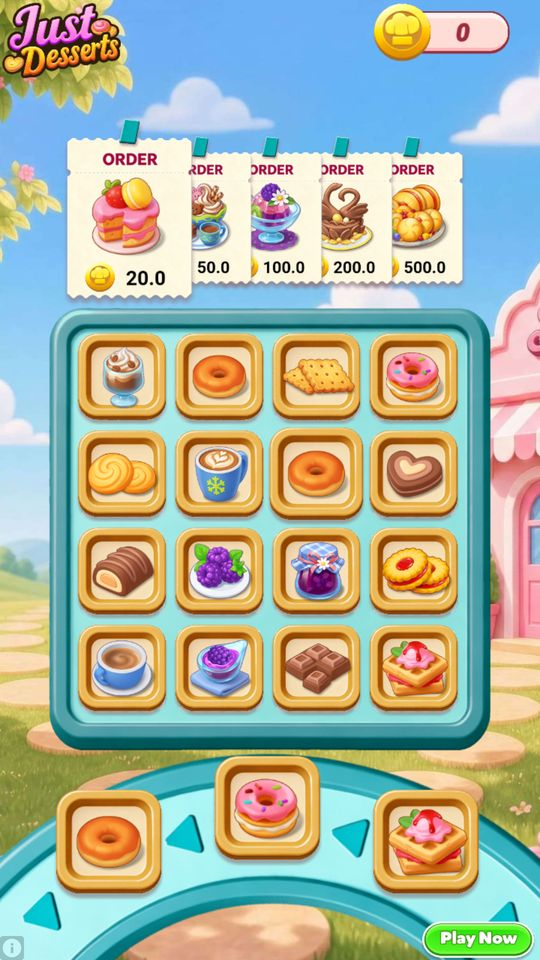

Quảng cáo
Quảng cáo chạy qua AppLovin MAX, gồm hai dạng: xen kẽ (interstitial, tự hiện sau màn) và có thưởng (rewarded, người chơi chủ động xem để đổi lấy…
Mô tả
- Quảng cáo chạy qua AppLovin MAX, gồm hai dạng: xen kẽ (interstitial, tự hiện sau màn) và có thưởng (rewarded, người chơi chủ động xem để đổi lấy coin/mạng/Play On).
- Điểm đáng chú ý nhất: trên bản đang chạy, quảng cáo xen kẽ thực tế đã tắt vì server đặt FirstLevelToShowInter = 10000 trong khi game chỉ có 999 màn.
Còn thiếu / chưa xác minh
Mở khóa & điểm vào
Theo cấu hình server, khác nhau cho từng dạng.
Điểm vào:
- Tự động sau khi thắng/thua màn
- Nút xem quảng cáo ở popup thua
- Nút nhân đôi thưởng
- Nút xin thêm mạng
Cách hoạt động
- AdConfigService làm việc y hệt PlayOnConfigService: nếu AdConfigModelFromBackend.IsEnabled thì dùng bản tải thẳng từ backend (cache ở GrandConfigs/GrandCachedAdConfig), không thì dùng bản Firebase.
- Trên bản đang chạy IsEnabled = true nên bản backend thắng.
- AdService.Initialize(hasUserConsent) khởi tạo MAX SDK.
- Với quảng cáo xen kẽ: CanShowInter(adShowPlace) kiểm tra ba thứ — IsInterEnabledFromConfig(), vị trí adShowPlace có nằm trong AdShowPlacesForInter không, và tần suất (InterShowFrequencyInSeconds); CanShowInterWithoutFrequency() bỏ qua chốt tần suất.
- IsInterResetAfterRewardedActive cho phép đặt lại đồng hồ tần suất sau khi người chơi xem quảng cáo có thưởng — một cách thưởng ngầm.
- Với quảng cáo có thưởng: CanShowRewardedVideo / IsRewardedEnabled / IsRewardedReady; ShouldShow2XRewarded(difficulty) và Get2XRewardedCoinAmount(difficulty) lo nút nhân đôi thưởng; ShouldShowLifeRewarded() lo nút xin mạng; IsPlayOnWithRewardedEnabled, GetDailyPlayOnRewardedLimit, GetRewardedPlayOnModels, GetConsecutiveRewardedLimit lo nhánh Play On bằng quảng cáo.
- AdService cũng nhận InAppPurchaseHistoryService nên biết người đã mua hàng — OnAttributionModelChanged và OnCpmChanged cho phép đổi cấu hình theo giá trị người chơi.
Luồng chi tiết theo code
AdConfigService làm việc y hệt PlayOnConfigService: nếu AdConfigModelFromBackend.IsEnabled thì dùng bản tải thẳng từ backend (cache ở GrandConfigs/GrandCachedAdConfig), không thì dùng bản Firebase. Trên bản đang chạy IsEnabled = true nên bản backend thắng. AdService.Initialize(hasUserConsent) khởi tạo MAX SDK. Với quảng cáo xen kẽ: CanShowInter(adShowPlace) kiểm tra ba thứ — IsInterEnabledFromConfig(), vị trí adShowPlace có nằm trong AdShowPlacesForInter không, và tần suất (InterShowFrequencyInSeconds); CanShowInterWithoutFrequency() bỏ qua chốt tần suất. IsInterResetAfterRewardedActive cho phép đặt lại đồng hồ tần suất sau khi người chơi xem quảng cáo có thưởng — một cách thưởng ngầm. Với quảng cáo có thưởng: CanShowRewardedVideo / IsRewardedEnabled / IsRewardedReady; ShouldShow2XRewarded(difficulty) và Get2XRewardedCoinAmount(difficulty) lo nút nhân đôi thưởng; ShouldShowLifeRewarded() lo nút xin mạng; IsPlayOnWithRewardedEnabled, GetDailyPlayOnRewardedLimit, GetRewardedPlayOnModels, GetConsecutiveRewardedLimit lo nhánh Play On bằng quảng cáo. AdService cũng nhận InAppPurchaseHistoryService nên biết người đã mua hàng — OnAttributionModelChanged và OnCpmChanged cho phép đổi cấu hình theo giá trị người chơi.
Ảnh chụp màn hình (2)
2 ảnh chụp trong game (LDPlayer, bản 1006, tài khoản thử level 320 → 350 (07/10/2026)). Bấm ảnh để phóng to; nhãn UC dẫn tới use case tương ứng.



Phần thưởng
Phần thưởng theo code
| Ngữ cảnh | Phần thưởng | Evidence |
|---|---|---|
| Nhân đôi thưởng (nếu bật) | 40 / 120 /  200 coin theo độ khó (server) 200 coin theo độ khó (server) | GrandCachedAdConfig.coinAmount2xRewarded* |
| Xem quảng cáo xin mạng |  1 mạng 1 mạng | AdRequestSource.OneLifeRewarded |
Số liệu chính
| Chỉ số | Giá trị | Nguồn |
|---|---|---|
| AdConfigModel.InterShowFrequencyInSeconds | 240 | AdConfigModel.InterShowFrequencyInSeconds — Assets/Resources/defaultconfigs/AdConfigModel.json |
| AdConfigModel.RegularLevelWinCoinReward | 20 | AdConfigModel.RegularLevelWinCoinReward — Assets/Resources/defaultconfigs/AdConfigModel.json |
| AdConfigModel.HardLevelWinCoinReward | 60 | AdConfigModel.HardLevelWinCoinReward — Assets/Resources/defaultconfigs/AdConfigModel.json |
| AdConfigModel.SuperHardLevelWinCoinReward | 100 | AdConfigModel.SuperHardLevelWinCoinReward — Assets/Resources/defaultconfigs/AdConfigModel.json |
| AdConfigModel.HardLevelMultiplier | 3 | AdConfigModel.HardLevelMultiplier — Assets/Resources/defaultconfigs/AdConfigModel.json |
| AdConfigModel.SuperHardLevelMultiplier | 5 | AdConfigModel.SuperHardLevelMultiplier — Assets/Resources/defaultconfigs/AdConfigModel.json |
Use case (8)
Bấm vào từng use case để mở. Mở/đóng tất cả
UC-00 Hai bản cấu hình quảng cáo mâu thuẫn nhau — bản nào thắng
Các bước- Firebase Remote Config gửi adConfigModel
- Backend gửi bản riêng, cache vào GrandConfigs/GrandCachedAdConfig
- adConfigModelFromBackend.IsEnabled quyết định bên nào được dùng
- AdConfigService.GetAdConfigModel() trả bản Grand khi cờ bật
| Actor | System |
|---|---|
| Trigger | Khởi động app |
| Điều kiện | - |
| Kết quả | Bản backend thắng; bản Firebase chỉ là dự phòng |
| Quy tắc / số liệu | Hai bản nói ngược nhau trên máy đã kéo dữ liệu: bản Firebase để isMaxSdkEnabled=false, isInterEnabled=false, isLifeRewardedEnabled=false, isInterResetAfterRewardedActive=false; bản Grand để isMaxSdkEnabled=true, isInterEnabled=true nhưng firstLevelToShowInter=10000, isLifeRewardedEnabled=true từ màn 50, isInterResetAfterRewardedActive=true. Vì adConfigModelFromBackend.isEnabled=true nên bản Grand thắng. Kết quả cuối cùng giống nhau ở chỗ quảng cáo xen kẽ không chạy, nhưng bằng hai cách khác nhau: Firebase tắt hẳn cờ, Grand đặt mốc màn ngoài tầm với. Đây là lý do đọc riêng một nguồn config sẽ cho kết luận sai. |
| Evidence | AdConfigService.GetAdConfigModel; adConfigModelFromBackend.isEnabled=true; DeviceRuntime CachedRemoteConfigs.adConfigModel vs GrandConfigs/GrandCachedAdConfig |
UC-01 Quảng cáo xen kẽ sau màn
Các bước- CanShowInter(AdShowPlace.EarlyWin / LateWin / Retry)
- IsInterEnabledFromConfig() kiểm tra IsInterEnabled
- Kiểm tra adShowPlace nằm trong AdShowPlacesForInter
- Kiểm tra đã qua InterShowFrequencyInSeconds
- ShowInterstitial(adRequestSource)
| Actor | System |
|---|---|
| Trigger | Kết thúc màn |
| Điều kiện | Đã qua FirstLevelToShowInter và đủ thời gian từ lần trước |
| Kết quả | Quảng cáo toàn màn hình |
| Quy tắc / số liệu | Trên bản đang chạy việc này không xảy ra: server đặt FirstLevelToShowInter = 10000 mà game chỉ có 999 màn. Client mặc định là 10. Tần suất 240 giây, vị trí cho phép [1,2,3] = EarlyWin, LateWin, Retry (client mặc định [1,2,3,4,5]) |
| Evidence | AdService.CanShowInter; IsInterEnabledFromConfig; ShowInterstitial; enum AdShowPlace; GrandCachedAdConfig |
UC-02 Nhân đôi thưởng coin sau khi thắng
Các bước- ShouldShow2XRewarded(difficulty) kiểm tra Is2xRewardedEnabled và cờ riêng cho từng độ khó
- Get2XRewardedCoinAmount(difficulty) trả số coin
- ShowRewarded(AdRequestSource.Rewarded2XCoin)
- Xem xong -> Earn(Coin, amount) với CurrencyEarnReason.Rewarded2XCoin
| Actor | Player |
|---|---|
| Trigger | Bấm nút x2 ở màn hình thắng |
| Điều kiện | Tính năng bật và đã qua mốc màn |
| Kết quả | Người chơi nhận thêm coin |
| Quy tắc / số liệu | Server đang tắt hoàn toàn: Is2xRewardedEnabled = false, Is2xEnabledForRegularLevels = false, Is2xEnabledForHardLevels = false. Nếu bật thì số coin server để 40/120/200 (client mặc định 100/200/300) từ màn 50 (client mặc định 10) |
| Evidence | AdService.ShouldShow2XRewarded; Get2XRewardedCoinAmount; enum AdRequestSource; GrandCachedAdConfig |
UC-03 Xem quảng cáo để xin một mạng
Các bước- ShouldShowLifeRewarded()
- ShowRewarded(AdRequestSource.OneLifeRewarded)
- Earn(Life, 1) với CurrencyEarnReason.RewardedOneLife
| Actor | Player |
|---|---|
| Trigger | Bấm nút ở popup hết mạng |
| Điều kiện | IsLifeRewardedEnabled và đã qua FirstLevelToShowLifeRewarded |
| Kết quả | Thêm một mạng, chơi tiếp không mất coin |
| Quy tắc / số liệu | Đang bật trên server, từ màn 50 (client mặc định 10) — đây là nhánh quảng cáo có thưởng chính còn hoạt động |
| Evidence | AdService.ShouldShowLifeRewarded; ShowRewarded; enum AdRequestSource; enum CurrencyEarnReason |
UC-04 Play On bằng quảng cáo
Các bước- IsPlayOnWithRewardedEnabled()
- GetPlayOnWithRewardedFirstLevelToShow() kiểm tra mốc màn
- GetDailyPlayOnRewardedLimit() và GetConsecutiveRewardedLimit() kiểm tra hạn mức
- GetRewardedPlayOnModels() lấy cấu hình thời gian cộng thêm
- ShowRewarded(AdRequestSource.PlayOnWithRewarded)
| Actor | Player |
|---|---|
| Trigger | Bấm nút quảng cáo ở popup thua |
| Điều kiện | Chưa hết hạn mức ngày |
| Kết quả | Chơi tiếp miễn phí |
| Quy tắc / số liệu | Có hai hạn mức riêng: theo ngày và theo số lần liên tiếp |
| Evidence | AdService.IsPlayOnWithRewardedEnabled; GetDailyPlayOnRewardedLimit; GetConsecutiveRewardedLimit; GetRewardedPlayOnModels |
UC-05 Đặt lại đồng hồ quảng cáo xen kẽ sau khi xem rewarded
Các bước- Đặt lại mốc thời gian tính InterShowFrequencyInSeconds
| Actor | System |
|---|---|
| Trigger | Xem xong một quảng cáo có thưởng |
| Điều kiện | IsInterResetAfterRewardedActive = true |
| Kết quả | Người chơi chủ động xem quảng cáo thì được hoãn quảng cáo bị ép xem |
| Quy tắc / số liệu | Cờ này bật ở cả client lẫn server |
| Evidence | AdConfigModel.IsInterResetAfterRewardedActive |
UC-06 Đổi cấu hình theo giá trị người chơi
Các bước- AdService nhận InAppPurchaseHistoryService khi khởi tạo
- OnAttributionModelChanged() / OnCpmChanged() kích hoạt AdConfigService.SendGetRequest()
- Backend trả cấu hình quảng cáo mới, cache lại GrandCachedAdConfig
| Actor | Server |
|---|---|
| Trigger | Người chơi mua hàng hoặc chỉ số CPM thay đổi |
| Điều kiện | - |
| Kết quả | Người đã chi tiền có thể thấy ít quảng cáo hơn |
| Quy tắc / số liệu | AdConfigModelFromBackend.ConfigType: client mặc định 19, server đang là 25 — đây là số hiệu biến thể cấu hình mà backend chọn cho tài khoản này |
| Evidence | AdService.OnAttributionModelChanged; OnCpmChanged; AdConfigService.SendGetRequest; AdConfigModelFromBackend |
UC-07 Tắt quảng cáo bằng gói mua
Các bước- Gói StorePermanentBundles có ShouldCloseAds = true
- CurrencyType.NoAds (=7) được cộng vào kho
- BundleNoAdsAvailabilityService quyết định còn bán gói tắt quảng cáo nữa không
| Actor | Player |
|---|---|
| Trigger | Mua gói có ShouldCloseAds |
| Điều kiện | - |
| Kết quả | Không còn quảng cáo xen kẽ |
| Quy tắc / số liệu | Server bật ShouldCloseAds cho hai gói đầu (Brick Bundle 4,99$ và gói 9,99$) trong khi client mặc định để false |
| Evidence | StoreConfigModelV2.StorePermanentBundles[].ShouldCloseAds; enum CurrencyType.NoAds; BundleNoAdsAvailabilityService |
Cấu hình (32)
Gộp mọi nguồn: const trong code, JSON mặc định trong Resources, bảng static, storage key, AB test, cờ server.
| Nguồn | Key | Kiểu | Giá trị | Ý nghĩa | Nơi định nghĩa |
|---|---|---|---|---|---|
| code const | AdService.ApplovinMaxSDKKey | string | (khoá SDK AppLovin MAX, 86 ký tự — không chép lại ở đây) | Khoá tích hợp AppLovin MAX nhúng trong client; cùng giá trị xuất hiện trong shared_prefs com.applovin.sdk.preferences.<key>.xml trên máy | AdService (const) — đã che trong tài liệu |
| code const | AdShowPlace | enum | None=0, EarlyWin=1, LateWin=2, Retry=3, willBeImplemented1=4, willBeImplemented2=5 | Vị trí được phép chèn quảng cáo xen kẽ; hai giá trị cuối vẫn mang tên chỗ trống của lập trình viên | enum AdShowPlace |
| code const | AdRequestSource | enum | None=0, LevelWin=1, LevelFail=2, InLevel=3, Debugger=4, OneLifeRewarded=5, Rewarded2XCoin=6, DailyChallengeRewarded=7, WatchAndWin=8, LevelWinContinueButton=9, LevelWinQuitButton=10, PlayOnWithRewarded=11, WheelOfFortune=12, InterObserver=13 | 14 nguồn yêu cầu quảng cáo; WatchAndWin và WheelOfFortune là di sản Magic Sort, Block Out không có hai tính năng đó | enum AdRequestSource |
| code const | AdProviderType | enum | (xem appendix/enums.md) | Nhà cung cấp quảng cáo | enum AdProviderType |
| json default | AdConfigModel.IsMaxSdkEnabled | bool | true — server đang chạy; mặc định client: false | Assets/Resources/defaultconfigs/AdConfigModel.json | |
| json default | AdConfigModel.IsInterEnabled | bool | true | Assets/Resources/defaultconfigs/AdConfigModel.json | |
| json default | AdConfigModel.FirstLevelToShowInter | int | 10000 — server đang chạy; mặc định client: 10 | Assets/Resources/defaultconfigs/AdConfigModel.json | |
| json default | AdConfigModel.InterShowFrequencyInSeconds | int | 240 | Assets/Resources/defaultconfigs/AdConfigModel.json | |
| json default | AdConfigModel.IsLifeRewardedEnabled | bool | true | Assets/Resources/defaultconfigs/AdConfigModel.json | |
| json default | AdConfigModel.FirstLevelToShowLifeRewarded | int | 50 — server đang chạy; mặc định client: 10 | Assets/Resources/defaultconfigs/AdConfigModel.json | |
| json default | AdConfigModel.Is2xRewardedEnabled | bool | false — server đang chạy; mặc định client: true | Assets/Resources/defaultconfigs/AdConfigModel.json | |
| json default | AdConfigModel.FirstLevelToShow2xRewarded | int | 50 — server đang chạy; mặc định client: 10 | Assets/Resources/defaultconfigs/AdConfigModel.json | |
| json default | AdConfigModel.Is2xEnabledForRegularLevels | bool | false — server đang chạy; mặc định client: true | Assets/Resources/defaultconfigs/AdConfigModel.json | |
| json default | AdConfigModel.Is2xEnabledForHardLevels | bool | false — server đang chạy; mặc định client: true | Assets/Resources/defaultconfigs/AdConfigModel.json | |
| json default | AdConfigModel.RegularLevelWinCoinReward | int | 20 | Assets/Resources/defaultconfigs/AdConfigModel.json | |
| json default | AdConfigModel.HardLevelWinCoinReward | int | 60 | Assets/Resources/defaultconfigs/AdConfigModel.json | |
| json default | AdConfigModel.SuperHardLevelWinCoinReward | int | 100 | Assets/Resources/defaultconfigs/AdConfigModel.json | |
| json default | AdConfigModel.IsInterResetAfterRewardedActive | bool | true | Assets/Resources/defaultconfigs/AdConfigModel.json | |
| json default | AdConfigModel.AdShowPlacesForInter | array | [1, 2, 3] — server đang chạy; mặc định client: [1, 2, 3, 4, 5] | Assets/Resources/defaultconfigs/AdConfigModel.json | |
| json default | AdConfigModel.CoinAmount2xRewardedForRegular | int | 40 — server đang chạy; mặc định client: 100 | Assets/Resources/defaultconfigs/AdConfigModel.json | |
| json default | AdConfigModel.CoinAmount2xRewardedForHard | int | 120 — server đang chạy; mặc định client: 200 | Assets/Resources/defaultconfigs/AdConfigModel.json | |
| json default | AdConfigModel.CoinAmount2xRewardedForSuperHard | int | 200 — server đang chạy; mặc định client: 300 | Assets/Resources/defaultconfigs/AdConfigModel.json | |
| json default | AdConfigModel.HardLevelMultiplier | int | 3 | Assets/Resources/defaultconfigs/AdConfigModel.json | |
| json default | AdConfigModel.SuperHardLevelMultiplier | int | 5 | Assets/Resources/defaultconfigs/AdConfigModel.json | |
| server info | AdConfigModel.applicationVersion | string | 1006 — chỉ server gửi, client không đóng sẵn giá trị mặc định | DeviceRuntime CachedRemoteConfigs | |
| server info | AdConfigModel.playOnWithRewardedEnabled | bool | false — chỉ server gửi, client không đóng sẵn giá trị mặc định | DeviceRuntime CachedRemoteConfigs | |
| server info | AdConfigModel.firstLevelToShowPlayOnWithRewarded | int | 0 — chỉ server gửi, client không đóng sẵn giá trị mặc định | DeviceRuntime CachedRemoteConfigs | |
| server info | AdConfigModel.dailyPlayOnCount | int | 0 — chỉ server gửi, client không đóng sẵn giá trị mặc định | DeviceRuntime CachedRemoteConfigs | |
| server info | AdConfigModel.consecutiveRewardedLimit | int | 0 — chỉ server gửi, client không đóng sẵn giá trị mặc định | DeviceRuntime CachedRemoteConfigs | |
| server info | AdConfigModel.rewardedPlayOnModels | array | [] — chỉ server gửi, client không đóng sẵn giá trị mặc định | DeviceRuntime CachedRemoteConfigs | |
| json default | AdConfigModelFromBackend.IsEnabled | bool | true | Assets/Resources/defaultconfigs/AdConfigModelFromBackend.json | |
| json default | AdConfigModelFromBackend.ConfigType | int | 25 — server đang chạy; mặc định client: 19 | Assets/Resources/defaultconfigs/AdConfigModelFromBackend.json |
Backend / server
| Command | Chiều | Mục đích |
|---|---|---|
GET ad config | client→server | lấy cấu hình quảng cáo theo phân khúc người chơi; cache vào GrandCachedAdConfig |
Storage keys
GrandConfigs/GrandCachedAdConfig
Chưa đọc được / ghi chú
- Không đọc được danh sách mạng quảng cáo (ad network) đang bật — nằm trong cấu hình MAX trên dashboard, không có trong client. Tuy vậy APK có kèm SDK của AppLovin, Facebook, Google, Unity Ads, InMobi, Moloco, Pangle/TikTok, Fyber, Mintegral.
- Giá trị GetDailyPlayOnRewardedLimit và GetConsecutiveRewardedLimit đọc từ cấu hình backend, không có trong file mặc định nào — chưa bắt được giá trị thật.
Tính năng liên quan
Play On (chơi tiếp khi sắp thua) Cửa hàng Analytics và đo lường Inventory
Nguồn đã đọc
- PseudoC/.../Application/Ads/Scripts/AdService.c
- PseudoC/.../Application/Ads/Scripts/AdConfigService.c
- DeviceRuntime/decoded/ad_config.json
- Assets/Resources/defaultconfigs/AdConfigModel.json